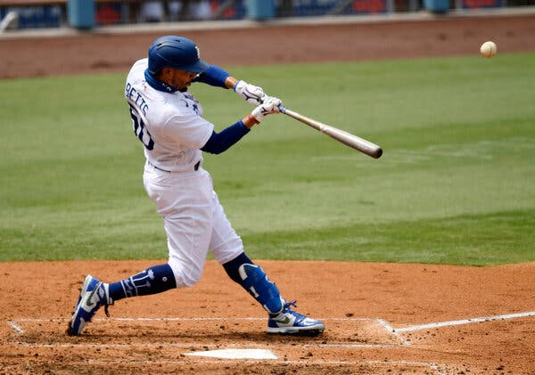
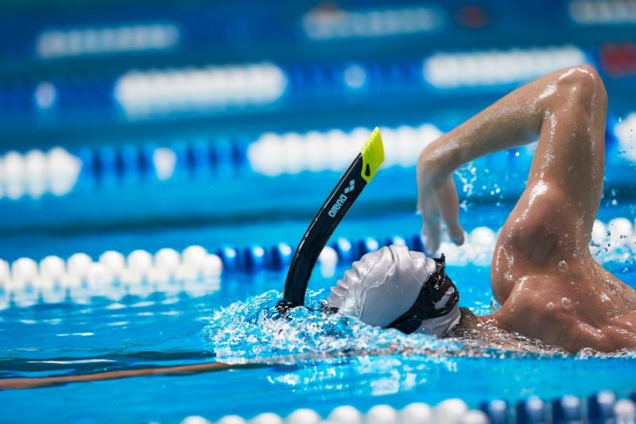
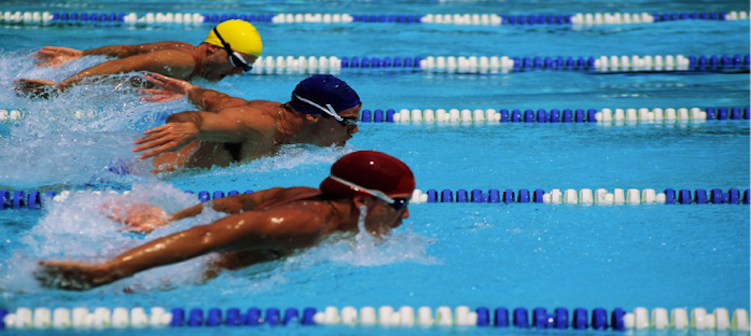
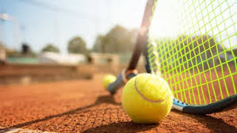
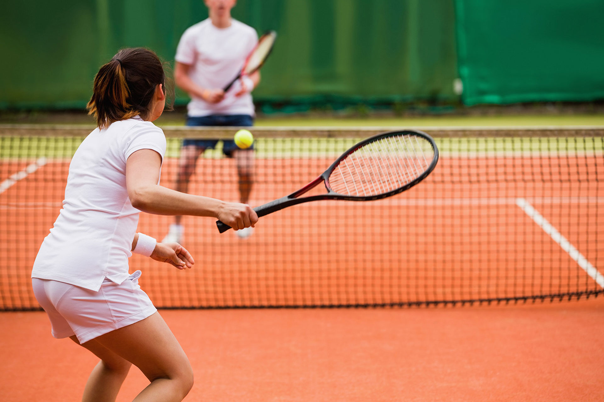
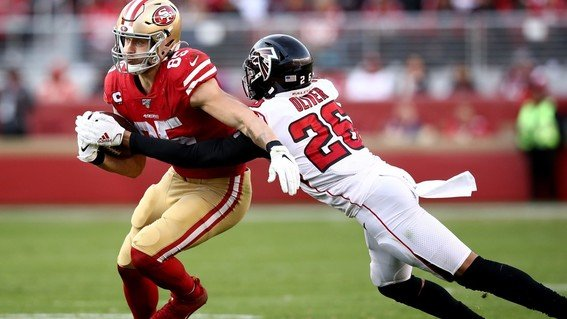
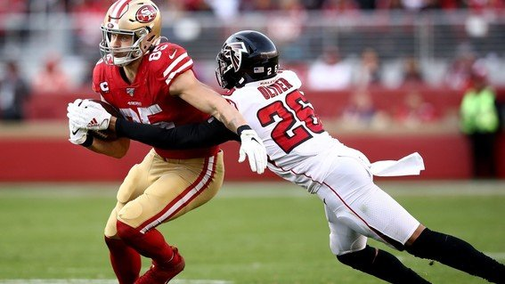
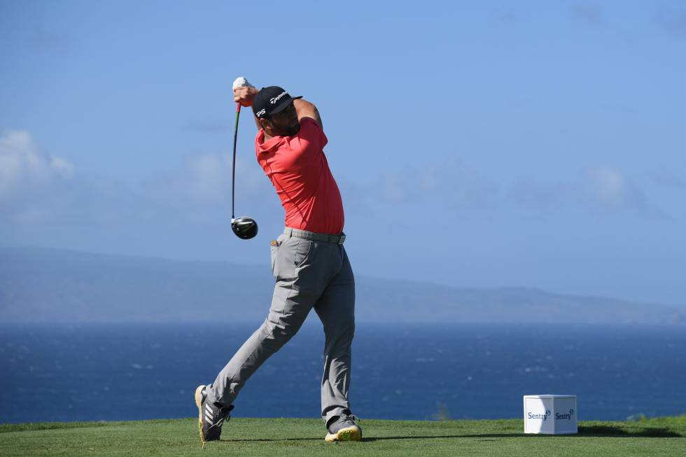
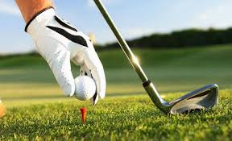

Deportes
Futboll
Es un deporte de equipo jugado entre dos conjuntos de once jugadores cada uno y algunos árbitros que se ocupan de que las normas se cumplan correctamente. Es ampliamente considerado el deporte más popular del mundo, pues lo practican unas 270 millones de personas. ambién se le conoce como futbol asociación o fútbol asociación, nombre derivado de The Football Association, primera federación oficial del mundo en este deporte y que utilizó ese nombre para distinguirlo de otros deportes que incluyen la palabra "futbol" o "fútbol".


Baloncesto
conocido coloquialmente como aros es un deporte de equipo en el que dos equipos, por lo general de cinco jugadores cada uno, enfrentados en una cancha rectangular , compiten con el objetivo principal de lanzar una pelota de baloncesto (aproximadamente 9.4 pulgadas (24 cm) de diámetro) a través del aro del defensor (una canasta de 18 pulgadas (46 cm) de diámetro montada a 10 pies (3,048 m) de altura en un tablero en cada extremo de la cancha) mientras evita que el equipo contrario lance a través de su propio aro. Un gol de campo vale dos puntos, a menos que se haga desde detrás de la línea de tres puntos., cuando vale tres. Después de una falta, el juego cronometrado se detiene y el jugador cometido falta o designado para lanzar una falta técnica recibe uno, dos o tres tiros libres de un punto . El equipo con más puntos al final del juego gana, pero si el juego reglamentario expira con el marcador empatado, se requiere un período adicional de juego (tiempo extra).
Béisbol
Se juega en un gran campo cubierto completamente por césped natural o artificial, con excepción de una zona llamada línea del corredor, donde los jugadores de la ofensiva corren para alcanzar las bases ubicadas en los vértices del área cuadrangular llamada diamante, y anotar así como el área del lanzador, donde el terreno es una loma de tierra.
El objetivo del juego es golpear una pelota con un bate, desplazando la pelota a través del campo y correr por el campo interno de tierra buscando alcanzar la mayor cantidad de bases posibles hasta dar la vuelta a la base desde donde se bateó, y lograr anotar el tanto conocido como carrera, mientras los jugadores defensivos buscan la pelota bateada para eliminar al jugador que bateó la pelota o a otros corredores, antes que estos lleguen primero a alguna de las bases o consigan anotar la carrera .
Natación
La natación es el arte de sostenerse y avanzar, usando los brazos y las piernas, sobre o bajo el agua. Puede realizarse como actividad lúdica o como deporte de competición. Debido a que los seres humanos no nadan instintivamente, la natación es una habilidad que debe ser aprendida.
 Tenis
El tenis es un deporte que se practica con raquetas y una pequeña pelota. Pueden jugarlo dos individuos (uno contra uno) o dos parejas (dos personas contra las otras dos). El objetivo es impactar la pelota para que pase por encima de la red que divide la cancha a la mitad, intentando que el rival no consiga devolverla.
 Futbol Americano
El fútbol americano nació hace más de cien años en EE.UU. derivando del rugby inglés. Es un juego de pelota jugado por dos equipos, es decir, 11 jugadores ofensivos juegan contra 11 defensivos. El equipo atacante intenta llevar el balón, bien sea, mediante la carrera o mediante el pase hacia la zona de anotación y de esta manera anotar puntos. La defensa tiene que tratar de impedir el avance del equipo rival hacia la anotación.
Dependiendo de si llevas la pelota hasta el final del recorrido, o si simplemente la pateas entre los palos del equipo oponente, desencadenará un número diferente de puntos para tu equipo. El equipo con el puntaje más alto, después de los 60 minutos de juego, gana el partido.
 

Golf
El golf es una actividad deportiva que consiste en embocar una bola de pequeñas dimensiones en un hoyo mediante distintos tipos de palos, empleando para ello el menor número de golpes posibles. La zona de salida se denomina tee y donde se ubica el hoyo se llama green, una zona verde perfectamente cuidada y segada.
 